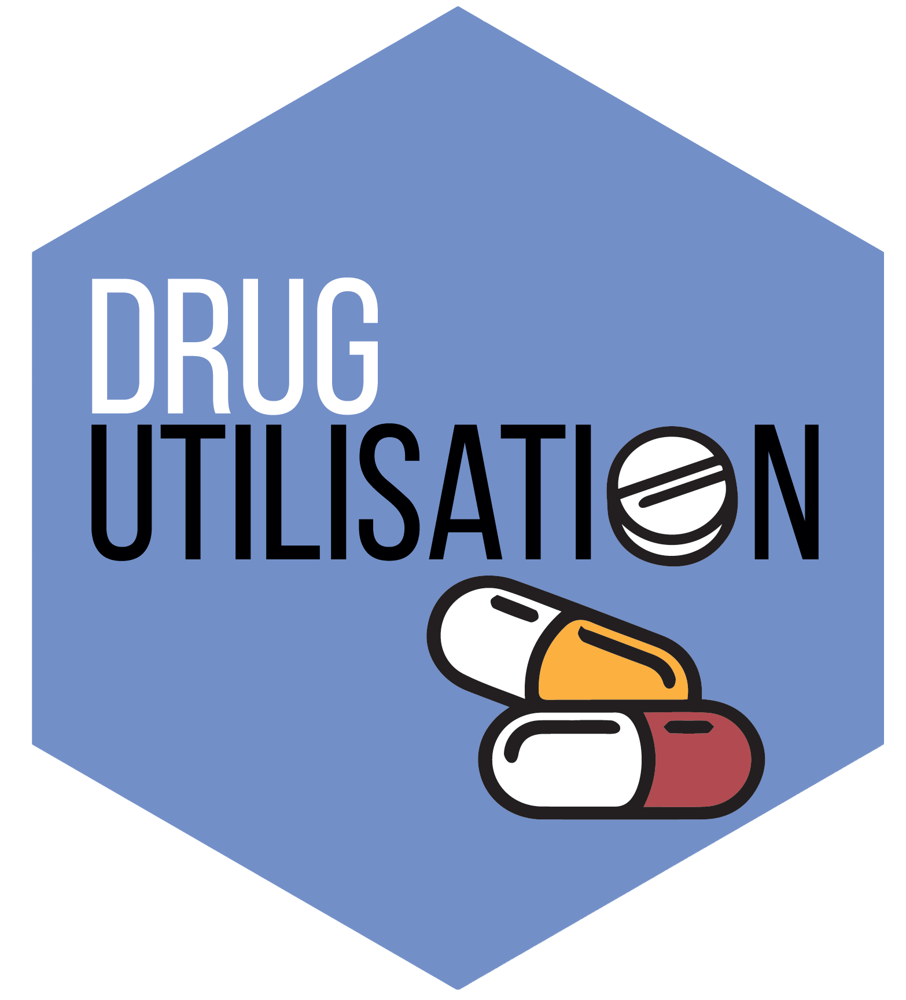

Generate a Plotly Sankey Diagram for Line of Therapy Transitions
Source:R/generateTherapyLineCohortSet.R
plotTherapyLineSankey.RdConstructs an interactive Plotly Sankey diagram visualizing patient transitions
across sequential Lines of Therapy (Line 1 -> Line 2 -> Line 3, etc.) generated by generateTherapyLineCohortSet().
Usage
plotTherapyLineSankey(
cohort,
coverageThreshold = 0.8,
maxLines = 4,
minLinePatients = 1,
includeEndOfFollowUp = TRUE
)Arguments
- cohort
A LOT cohort table generated by
generateTherapyLineCohortSet().- coverageThreshold
Numeric between 0 and 1 (default:
0.80). Cumulative percentage of patient volume per line step to explicitly represent before grouping into'Other Regimens'.- maxLines
Integer (default:
4). Maximum number of therapy line steps to display. IfNULL, all lines are displayed.- minLinePatients
Minimum total patients in a therapy line step required to display the step column (default:
1).- includeEndOfFollowUp
Logical (default:
TRUE). Whether to include terminal nodes for patients who drop out or end follow-up after Line L.
Details
The visualization includes:
Cumulative Patient Volume Coverage: Dynamically selects top regimens at each line step covering at least
coverageThreshold(default 80\Terminal Follow-Up Streams: Displays
"Line L: End of Follow-Up"nodes for patients who drop out or reach end of study.Strict Step Alignment: Nodes and target streams are strictly column-aligned by therapy line step.
Examples
if (FALSE) { # \dontrun{
library(DrugUtilisation)
cdm <- mockDrugUtilisation()
# ...
plotTherapyLineSankey(cdm$lot_cohorts)
} # }